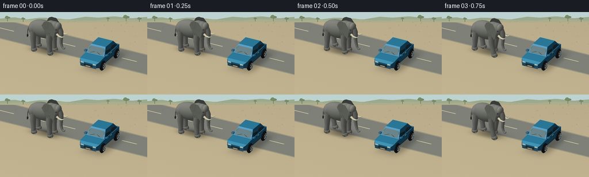
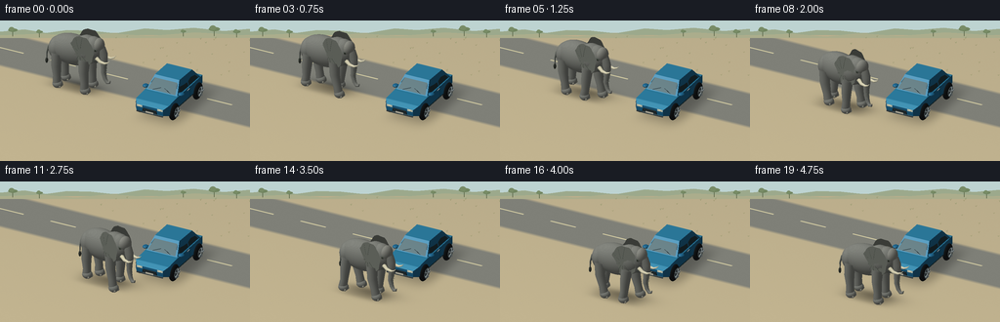

CODING AGENTS AS PIXEL WORLD MODELS
traex/GPT-6.1-Sol · dynamic_spatial_relationship_0066
点击播放 · 原生 RGB 像素
逐轮保存的候选
回放视频、检查图与代码变化。
每份候选均可单独播放。实际图片检查记录在下方工具轨迹中。
候选 01播放与检查图
点击播放 · 原生 RGB 像素


展开代码变化
--- 上一保存版本
+++ 本次保存版本
@@ -0,0 +1,340 @@
+from pathlib import Path
+import math
+import numpy as np
+from PIL import Image, ImageDraw
+import artifact_io
+
+ROOT=Path(__file__).parent
+W,H=256,144
+SS=3
+RW,RH=W*SS,H*SS
+# Hand-built geometric scene and a small, local software rasterizer.
+CAM=np.array([6.3,-13.0,8.3],float)
+TARGET=np.array([-.15,-.85,1.05])
+FORWARD=(TARGET-CAM); FORWARD/=np.linalg.norm(FORWARD)
+RIGHT=np.cross(FORWARD,[0,0,1.]); RIGHT/=np.linalg.norm(RIGHT)
+UP=np.cross(RIGHT,FORWARD)
+SCALE=RW/12.7
+LIGHT=np.array([-0.5,-0.7,1.3]); LIGHT/=np.linalg.norm(LIGHT)
+
+class Renderer:
+ def __init__(self, bg):
+ self.rgb=bg.copy().astype(float)
+ self.depth=np.full((RH,RW),1e9)
+ def project(self,p):
+ q=p-TARGET
+ return np.column_stack((RW/2+q@RIGHT*SCALE,RH/2-q@UP*SCALE,(p-CAM)@FORWARD))
+ def mesh(self,verts,faces,color,normals=None,texture=0,shine=0):
+ v=np.asarray(verts,float); f=np.asarray(faces,int)
+ p=self.project(v)
+ if normals is None:
+ normals=np.zeros_like(v)
+ for tri in f:
+ a,b,c=v[tri]; n=np.cross(b-a,c-a)
+ for k in tri: normals[k]+=n
+ normals/=np.maximum(np.linalg.norm(normals,axis=1,keepdims=True),1e-8)
+ # shading is evaluated at vertices; smooth forms retain continuous lighting.
+ normals=np.asarray(normals)
+ diffuse=np.maximum(0,normals@LIGHT)
+ view=(CAM-v); view/=np.linalg.norm(view,axis=1,keepdims=True)
+ half=view+LIGHT; half/=np.linalg.norm(half,axis=1,keepdims=True)
+ spec=np.maximum(0,np.sum(normals*half,axis=1))**32*shine
+ lit=np.array(color)[None,:]*(.48+.53*diffuse[:,None])
+ lit+=spec[:,None]*np.array([255,247,226])
+ for ids in f:
+ a,b,c=p[ids]
+ x0=max(0,int(np.floor(min(a[0],b[0],c[0])))); x1=min(RW-1,int(np.ceil(max(a[0],b[0],c[0]))))
+ y0=max(0,int(np.floor(min(a[1],b[1],c[1])))); y1=min(RH-1,int(np.ceil(max(a[1],b[1],c[1]))))
+ if x1<x0 or y1<y0: continue
+ den=(b[1]-c[1])*(a[0]-c[0])+(c[0]-b[0])*(a[1]-c[1])
+ if abs(den)<1e-7: continue
+ yy,xx=np.mgrid[y0:y1+1,x0:x1+1]; xx=xx+.5; yy=yy+.5
+ u=((b[1]-c[1])*(xx-c[0])+(c[0]-b[0])*(yy-c[1]))/den
+ vv=((c[1]-a[1])*(xx-c[0])+(a[0]-c[0])*(yy-c[1]))/den
+ ww=1-u-vv
+ zz=u*a[2]+vv*b[2]+ww*c[2]
+ region=self.depth[y0:y1+1,x0:x1+1]
+ mask=(u>=-1e-5)&(vv>=-1e-5)&(ww>=-1e-5)&(zz<region)
+ if not mask.any(): continue
+ col=u[:,:,None]*lit[ids[0]]+vv[:,:,None]*lit[ids[1]]+ww[:,:,None]*lit[ids[2]]
+ if texture:
+ pos=u[:,:,None]*v[ids[0]]+vv[:,:,None]*v[ids[1]]+ww[:,:,None]*v[ids[2]]
+ # Fine irregular skin relief, rather than screen-space flicker.
+ tex=(np.sin(pos[:,:,2]*90+np.sin(pos[:,:,0]*33)*1.1+pos[:,:,1]*8)*np.sin(pos[:,:,0]*54+pos[:,:,1]*67)+.4*np.sin(pos[:,:,0]*131+pos[:,:,2]*93))
+ col+=texture*tex[:,:,None]
+ region[mask]=zz[mask]
+ self.rgb[y0:y1+1,x0:x1+1][mask]=col[mask]
+
+
+def ellipsoid(r,center,radius,color,transform=None,seg=24,rings=14,texture=0,shine=0):
+ vs=[]; ns=[]
+ for j in range(rings+1):
+ phi=math.pi*j/rings
+ for i in range(seg):
+ th=2*math.pi*i/seg
+ n=np.array([math.sin(phi)*math.cos(th),math.sin(phi)*math.sin(th),math.cos(phi)])
+ pos=np.array(center)+n*np.array(radius)
+ normal=n/np.array(radius); normal/=np.linalg.norm(normal)
+ if transform:
+ pos,normal=transform(pos,normal)
+ vs.append(pos); ns.append(normal)
+ fs=[]
+ for j in range(rings):
+ for i in range(seg):
+ a=j*seg+i; b=j*seg+(i+1)%seg; c=(j+1)*seg+i; d=(j+1)*seg+(i+1)%seg
+ fs.extend(((a,c,b),(b,c,d)))
+ r.mesh(vs,fs,color,ns,texture,shine)
+
+
+def tube(r,points,radii,color,transform=None,seg=12,texture=0):
+ points=np.array(points,float); vs=[]; ns=[]
+ for j,p in enumerate(points):
+ tang=points[min(j+1,len(points)-1)]-points[max(0,j-1)]; tang/=np.linalg.norm(tang)
+ basis=np.array([0,1,0.])
+ if abs(tang@basis)>.93: basis=np.array([1.,0,0])
+ u=np.cross(tang,basis); u/=np.linalg.norm(u); v=np.cross(tang,u)
+ for k in range(seg):
+ n=u*math.cos(k*2*math.pi/seg)+v*math.sin(k*2*math.pi/seg)
+ p1=p+radii[j]*n
+ if transform: p1,n=transform(p1,n)
+ vs.append(p1); ns.append(n)
+ fs=[]
+ for j in range(len(points)-1):
+ for k in range(seg):
+ a=j*seg+k; b=j*seg+(k+1)%seg; c=a+seg; d=b+seg
+ fs.extend(((a,b,c),(b,d,c)))
+ fs.extend((0,k,k+1) for k in range(1,seg-1))
+ end=(len(points)-1)*seg
+ fs.extend((end,end+k+1,end+k) for k in range(1,seg-1))
+ r.mesh(vs,fs,color,ns,texture)
+
+
+def polygon(r,points,color,shine=0):
+ v=np.array(points,float); n=np.cross(v[1]-v[0],v[2]-v[0]); n/=np.linalg.norm(n)
+ r.mesh(v,[(0,i,i+1) for i in range(1,len(v)-1)],color,np.tile(n,(len(v),1)),shine=shine)
+
+def box(r,lo,hi,col,shine=0):
+ x,y,z=lo; X,Y,Z=hi
+ polygon(r,[(x,y,z),(x,Y,z),(X,Y,z),(X,y,z)],col,shine)
+ polygon(r,[(x,y,Z),(X,y,Z),(X,Y,Z),(x,Y,Z)],col,shine)
+ polygon(r,[(x,y,z),(X,y,z),(X,y,Z),(x,y,Z)],col,shine)
+ polygon(r,[(X,Y,z),(x,Y,z),(x,Y,Z),(X,Y,Z)],col,shine)
+ polygon(r,[(x,Y,z),(x,y,z),(x,y,Z),(x,Y,Z)],col,shine)
+ polygon(r,[(X,y,z),(X,Y,z),(X,Y,Z),(X,y,Z)],col,shine)
+
+CAR_X,CAR_Y=1.65,.55
+
+def car(r):
+ # Low hatchback body with a distinct hood, windshield, grille and headlights.
+ def P(x,y,z): return (x+CAR_X,y+CAR_Y,z)
+ blue=(32,105,147); darker=(23,80,113); bright=(46,129,165)
+ sections=[(-2.1,.76,.54,.88),(-1.82,.94,.47,1.03),(-.95,.94,.47,1.1),(1.45,.94,.5,1.12),(2.02,.84,.59,1.02)]
+ for i in range(len(sections)-1):
+ y,a,z,h=sections[i]; Y,A,Z,Hh=sections[i+1]
+ polygon(r,[P(-a,y,h),P(a,y,h),P(A,Y,Hh),P(-A,Y,Hh)],bright,.25)
+ polygon(r,[P(a,y,z),P(A,Y,Z),P(A,Y,Hh),P(a,y,h)],blue,.25)
+ polygon(r,[P(-A,Y,Z),P(-a,y,z),P(-a,y,h),P(-A,Y,Hh)],blue,.25)
+ y,a,z,h=sections[0]
+ polygon(r,[P(-a,y,z),P(a,y,z),P(a,y,h),P(-a,y,h)],blue,.2)
+ y,a,z,h=sections[-1]
+ polygon(r,[P(a,y,z),P(-a,y,z),P(-a,y,h),P(a,y,h)],blue,.2)
+ # cabin shell, sloped front glass and back glass
+ polygon(r,[P(-.89,-.82,1.08),P(.89,-.82,1.08),P(.70,-.22,1.73),P(-.70,-.22,1.73)],blue,.25)
+ polygon(r,[P(-.70,-.22,1.73),P(.70,-.22,1.73),P(.72,1.12,1.72),P(-.72,1.12,1.72)],bright,.35)
+ polygon(r,[P(.72,1.12,1.72),P(.88,1.68,1.09),P(-.88,1.68,1.09),P(-.72,1.12,1.72)],blue,.25)
+ for s in [-1,1]:
+ polygon(r,[P(s*.89,-.82,1.08),P(s*.90,1.68,1.09),P(s*.72,1.12,1.72),P(s*.70,-.22,1.73)],blue,.2)
+ # side glass panels, slight pale reflection across the upper edge
+ polygon(r,[P(s*.896,-.63,1.16),P(s*.895,.39,1.16),P(s*.711,.39,1.63),P(s*.711,-.17,1.63)],(37,57,64),.18)
+ polygon(r,[P(s*.895,.49,1.16),P(s*.89,1.45,1.16),P(s*.732,1.04,1.63),P(s*.713,.49,1.63)],(39,59,65),.18)
+ tube(r,[P(s*.708,-.16,1.636),P(s*.713,.37,1.636)],[.011,.011],(158,188,189),seg=6)
+ # door lines, sill, handles, wing mirrors
+ tube(r,[P(s*.952,.45,.53),P(s*.952,.45,1.11)],[.009,.009],(13,61,85),seg=6)
+ tube(r,[P(s*.945,-.86,.52),P(s*.945,1.44,.52)],[.025,.025],(24,48,56),seg=8)
+ box(r,P(min(s*.959,s*.987),.14,1.01),P(max(s*.959,s*.987),.37,1.053),(169,181,183),.25)
+ ellipsoid(r,P(s*1.02,-.62,1.18),(.17,.17,.085),blue,seg=14,rings=8,shine=.3)
+ polygon(r,[P(-.80,-.833,1.17),P(.80,-.833,1.17),P(.635,-.285,1.65),P(-.635,-.285,1.65)],(51,79,90),.25)
+ polygon(r,[P(-.64,-.299,1.637),P(.64,-.299,1.637),P(.75,-.56,1.405),P(-.75,-.56,1.405)],(90,124,135),.25)
+ for s in [-1,1]:
+ tube(r,[P(s*.51,-.84,1.19),P(s*.10,-.69,1.32)],[.009,.009],(17,27,32),seg=6)
+ # front radiator grille and silver bumper. normal toward camera.
+ polygon(r,[P(-.43,-2.116,.56),P(.43,-2.116,.56),P(.39,-2.116,.76),P(-.39,-2.116,.76)],(17,26,29))
+ for z in [.59,.64,.69,.74]:
+ tube(r,[P(-.38,-2.125,z),P(.38,-2.125,z)],[.008,.008],(91,103,106),seg=6)
+ for s in [-1,1]:
+ x=s*.59
+ polygon(r,[P(x-.16,-2.115,.77),P(x+.16,-2.115,.77),P(x+.155,-2.105,.89),P(x-.155,-2.105,.89)],(225,233,211),.3)
+ ellipsoid(r,P(x,-2.12,.828),(.098,.016,.037),(247,243,205),seg=12,rings=6,shine=.2)
+ polygon(r,[P(s*.7-.1,2.031,.79),P(s*.7+.1,2.031,.79),P(s*.7+.1,2.031,.95),P(s*.7-.1,2.031,.95)],(172,37,30))
+ box(r,P(-.76,-2.138,.48),P(.76,-2.099,.53),(66,77,82),.3)
+ polygon(r,[P(-.22,-2.14,.53),P(.22,-2.14,.53),P(.22,-2.14,.63),P(-.22,-2.14,.63)],(224,219,199))
+ # Tires, recessed hubs, concentric rims and five spokes.
+ for s in [-1,1]:
+ for y in [-1.25,1.31]:
+ ellipsoid(r,P(s*.94,y,.46),(.18,.45,.45),(25,29,31),seg=24,rings=14)
+ ellipsoid(r,P(s*1.106,y,.46),(.012,.29,.29),(120,137,141),seg=24,rings=12,shine=.45)
+ ellipsoid(r,P(s*1.12,y,.46),(.013,.208,.208),(47,57,62),seg=24,rings=12)
+ for j in range(5):
+ theta=j*2*math.pi/5
+ tube(r,[P(s*1.137,y,.46),P(s*1.137,y+math.cos(theta)*.24,.46+math.sin(theta)*.24)],[.034,.045],(166,179,181),seg=6)
+ ellipsoid(r,P(s*1.153,y,.46),(.02,.082,.082),(196,204,198),seg=14,rings=8,shine=.45)
+
+
+def elephant_pose(t):
+ # A gentle curved walk, followed by a settled pose in front of the bumper.
+ u=np.clip((t-.35)/3.8,0,1)
+ e=u*u*(3-2*u)
+ x=-3.55+4.45*e
+ y=.1-3.7*e
+ angle=-.26*math.sin(math.pi*u) # shoulder follows the curve, no sudden turning
+ moving=(0<u<1)
+ stride=t*2*math.pi*1.05
+ return x,y,angle,stride,moving,e
+
+def elephant(r,t):
+ x,y,ang,phase,moving,e=elephant_pose(t)
+ ca,sa=math.cos(ang),math.sin(ang)
+ bob=.035*math.sin(phase*2) if moving else 0
+ def trans(p,n):
+ return np.array([x+ca*p[0]-sa*p[1],y+sa*p[0]+ca*p[1],p[2]+bob]),np.array([ca*n[0]-sa*n[1],sa*n[0]+ca*n[1],n[2]])
+ skin=(131,133,126); darkskin=(112,117,110)
+ # Tail behind the body; gently swaying black brush at the tip.
+ sway=.12*math.sin(phase*.6)
+ tail=[(-1.19,0,2.25),(-1.51,.05+sway,1.95),(-1.64,.09+sway,1.55),(-1.66,.1+sway,1.13)]
+ tube(r,tail,[.073,.059,.041,.025],darkskin,trans,texture=2)
+ ellipsoid(r,(-1.66,.1+sway,1.08),(.07,.075,.16),(59,64,57),trans,seg=12,rings=8)
+ # Four weight-bearing legs with a staggered walking gait.
+ for front,side in [(-1,1),(1,1),(-1,-1),(1,-1)]:
+ hipx=front*.79; sy=side*.43
+ ph=phase+(0 if front*side==1 else math.pi)+(0.55 if front==-1 else 0)
+ step=.26*math.sin(ph) if moving else 0
+ lift=.16*max(0,math.cos(ph)) if moving else 0
+ tube(r,[(hipx,sy,1.95),(hipx-.05+step*.25,sy,1.24),(hipx+step*.65,sy,.64+lift*.3),(hipx+step,sy,.22+lift)], [.29,.26,.205,.225],skin,trans,seg=16,texture=3)
+ ellipsoid(r,(hipx+step+.04,sy,.20+lift),(.275,.26,.22),skin,trans,seg=18,rings=10,texture=2)
+ for a in [-.7,0,.7]:
+ # Small cream-gray toenails on the leading edge of the broad feet.
+ ellipsoid(r,(hipx+step+.24,sy+a*.19,.13+lift),(.045,.065,.076),(178,177,160),trans,seg=10,rings=6)
+ ellipsoid(r,(-.08,0,2.14),(1.29,.67,.83),skin,trans,seg=32,rings=20,texture=3)
+ ellipsoid(r,(.72,0,2.32),(.74,.64,.78),skin,trans,seg=24,rings=16,texture=3)
+ ellipsoid(r,(-.95,0,2.04),(.48,.57,.62),skin,trans,seg=20,rings=14,texture=3)
+ # Broad African-elephant ears. Smooth cupped disks with irregular/scalloped edges.
+ for side in [1,-1]:
+ flap=.09*math.sin(t*2.6+(side==1)*.5)
+ vs=[]; ns=[]; N=32; rings=7
+ for j in range(rings+1):
+ rr=j/rings
+ for k in range(N):
+ th=2*math.pi*k/N
+ scallop=1+.027*math.sin(th*7)+.017*math.cos(th*11)
+ xx=.65+.68*rr*math.cos(th)*scallop
+ zz=2.41+.85*rr*math.sin(th)*scallop
+ yy=side*(.47+.17*(1-rr*rr)+flap*rr*math.cos(th))
+ p,n=trans(np.array([xx,yy,zz]),np.array([.12,side,0.08]))
+ vs.append(p); ns.append(n/np.linalg.norm(n))
+ fs=[]
+ for j in range(rings):
+ for k in range(N):
+ a=j*N+k;b=j*N+(k+1)%N;c=a+N;d=b+N
+ fs.extend(((a,b,c),(b,d,c)))
+ r.mesh(vs,fs,(121,125,116),ns,3)
+ # Fine, subdued folds radiating out from the ear root.
+ for theta in [1.5,2.1,2.7,3.5,4.15,4.7,5.4]:
+ pts=[]
+ for rr in [.25,.42,.62,.79,.93]:
+ pts.append((.65+.68*rr*math.cos(theta),side*(.475+.17*(1-rr*rr)+flap*rr*math.cos(theta)+.008),2.41+.85*rr*math.sin(theta)))
+ tube(r,pts,[.010]*len(pts),(107,114,103),trans,seg=5)
+ # Rounded double-domed forehead, jaws and eyes.
+ ellipsoid(r,(1.09,0,2.49),(.55,.47,.64),skin,trans,seg=26,rings=18,texture=3)
+ ellipsoid(r,(1.37,0,2.7),(.30,.39,.40),(139,140,132),trans,seg=22,rings=14,texture=3)
+ ellipsoid(r,(1.21,0,2.08),(.36,.34,.38),darkskin,trans,seg=20,rings=14,texture=2)
+ for side in [-1,1]:
+ ellipsoid(r,(1.36,side*.374,2.59),(.12,.046,.09),(103,109,99),trans,seg=16,rings=10)
+ ellipsoid(r,(1.395,side*.409,2.6),(.040,.022,.035),(26,30,24),trans,seg=12,rings=8,shine=.2)
+ ellipsoid(r,(1.408,side*.428,2.614),(.009,.007,.009),(231,229,206),trans,seg=8,rings=5)
+ tube(r,[(1.29,side*.421,2.67),(1.36,side*.434,2.691),(1.45,side*.40,2.665)],[.017,.024,.016],darkskin,trans,seg=7)
+ # Ivory tusks sweep forward and gently upward from each cheek.
+ for side in [-1,1]:
+ tube(r,[(1.39,side*.26,2.11),(1.63,side*.32,1.97),(1.91,side*.33,1.95),(2.10,side*.34,2.04),(2.21,side*.33,2.16)],[.107,.085,.055,.031,.003],(228,222,190),trans,seg=14)
+ # Flexible tapered trunk, hanging naturally and slightly curled at its tip.
+ swing=.11*math.sin(phase*.7) if moving else .035*math.sin(t*2)
+ pts=[(1.51,0,2.56),(1.66,0,2.25),(1.69,.02,1.91),(1.66,.03,1.57),(1.65+swing,.025,1.20),(1.74+swing,.02,.87),(1.88+swing,.00,.70),(2.01+swing,-.01,.73),(2.06+swing,-.01,.84)]
+ radii=[.245,.226,.186,.157,.133,.107,.085,.059,.022]
+ tube(r,pts,radii,skin,trans,seg=20,texture=3)
+ # Raised transverse creases on the trunk catch soft light.
+ for j in range(9):
+ z=2.18-j*.143
+ xtr=1.68 if z>1.3 else 1.68+swing
+ rad=.19-(2.18-z)*.05
+ arc=[]
+ for a in np.linspace(-1.05,1.05,7):
+ arc.append((xtr+rad*math.cos(a),rad*math.sin(a),z))
+ tube(r,arc,[.007]*7,(102,110,99),trans,seg=5)
+
+# Landscape: softly textured sandy turnout, warm sunlight, a quiet distant savannah.
+Y,X=np.mgrid[0:RH,0:RW]
+qx=(X+.5-RW/2)/SCALE
+qy=-(Y+.5-RH/2)/SCALE
+origin=TARGET+qx[:,:,None]*RIGHT+qy[:,:,None]*UP
+rayt=-origin[:,:,2]/FORWARD[2]
+ground=origin+rayt[:,:,None]*FORWARD
+GX,GY=ground[:,:,0],ground[:,:,1]
+rng=np.random.default_rng(12)
+base_noise=rng.normal(0,1,(RH,RW))
+
+def background(t):
+ # The ground is rendered analytically, so shadows remain attached to moving feet.
+ warmth=np.clip((GY+8)/28,0,1)
+ base=np.stack([194-13*warmth,180-12*warmth,144-8*warmth],axis=-1)
+ noise=1.5*np.sin(GX*79+GY*31)*np.sin(GY*111-GX*29)+base_noise*.6
+ base+=noise[:,:,None]
+ # Road behind the subjects, with a slightly sandy shoulder.
+ road=np.clip((GY-.25)*4,0,1)*np.clip((3.75-GY)*4,0,1)
+ roadcol=np.array([127.,128.,120.])+noise[:,:,None]*.7
+ base=base*(1-road[:,:,None])+roadcol*road[:,:,None]
+ # Discrete center markings behind the parked car.
+ stripe=(abs(GY-2.1)<.045)&((GX+15)%3<1.45)
+ base[stripe]=[211,204,163]
+ ex,ey,_,_,_,_=elephant_pose(t)
+ # broad penumbra and tighter contact shadow, light is from upper left
+ carsh=np.exp(-(((GX-(CAR_X+.28))/1.15)**4+((GY-(CAR_Y+.36))/2.21)**4))* .28
+ els=np.exp(-(((GX-ex-.36)/1.67)**2+((GY-ey-.3)/.85)**2)*1.7)*.26
+ contact=np.exp(-(((GX-ex)/1.34)**4+((GY-ey)/.6)**4))* .17
+ shade=np.clip(carsh+els+contact,0,.53)
+ base*=1-shade[:,:,None]
+ img=Image.fromarray(np.uint8(np.clip(base,0,255)))
+ d=ImageDraw.Draw(img)
+ # Far low hills and sparse acacia silhouettes only at the top of frame.
+ d.rectangle((0,0,RW,37), fill=(189,211,209))
+ d.polygon([(0,44),(0,34),(75,27),(141,38),(206,29),(279,31),(355,39),(445,24),(512,29),(595,22),(687,32),(RW,25),(RW,44)],fill=(156,169,140))
+ d.polygon([(0,53),(0,45),(130,40),(233,49),(330,39),(460,47),(600,36),(RW,46),(RW,53)], fill=(171,173,140))
+ for sx,sy,sz in [(39,38,14),(121,41,10),(658,37,17),(727,41,11),(563,38,8)]:
+ d.line([(sx,sy+10),(sx,sy-sz//2)], fill=(89,99,71),width=2)
+ d.ellipse((sx-sz,sy-sz,sx+sz,sy-sz//3),fill=(113,133,96))
+ d.ellipse((sx-sz*.8,sy-sz*1.25,sx+sz*.3,sy-sz*.45),fill=(120,140,102))
+ # Small distant grass tufts along the shoulder, deterministic and static.
+ rg=np.random.default_rng(41)
+ for i in range(90):
+ wx=rg.uniform(-11,11); wy=rg.uniform(4.0,9.5)
+ p=np.array([wx,wy,0])-TARGET
+ sx=RW/2+p@RIGHT*SCALE; sy=RH/2-p@UP*SCALE
+ if sy<50 or sy>RH: continue
+ h=rg.uniform(2,5)
+ col=(143+int(rg.uniform(-9,9)),145,102)
+ d.line([(sx-2,sy-h),(sx,sy),(sx+2,sy-h-1)],fill=col,width=1)
+ return np.array(img)
+
+
+def main():
+ frames=[]
+ for i in range(20):
+ t=i/4
+ r=Renderer(background(t))
+ car(r)
+ elephant(r,t)
+ im=Image.fromarray(np.uint8(np.clip(r.rgb,0,255)))
+ im=im.resize((W,H),Image.Resampling.LANCZOS)
+ frames.append(np.array(im))
+ print(f'rendered {i+1}/20',flush=True)
+ artifact_io.save(np.stack(frames),ROOT)
+
+if __name__=='__main__': main()
可观测工具轨迹
实际执行的命令与返回图片。
命令 1exit 0
/bin/bash -lc 'ls -la && cat prompt.txt && cat GENERATION_RULES.md && cat task_spec.json'
命令 2exit 0
/bin/bash -lc "cat artifact_io.py && python - <<'PY'
import numpy,PIL
print('libraries available')
PY"命令 3exit 0
/bin/bash -lc "cat > generate.py <<'PY'
from pathlib import Path
import math
import numpy as np
from PIL import Image, ImageDraw
import artifact_io
ROOT=Path(__file__).parent
W,H=256,144
SS=3
RW,RH=W*SS,H*SS
# Hand-built geometric scene and a small, local software rasterizer.
CAM=np.array([6.3,-13.0,8.3],float)
TARGET=np.array([-.15,-.85,1.05])
FORWARD=(TARGET-CAM); FORWARD/=np.linalg.norm(FORWARD)
RIGHT=np.cross(FORWARD,[0,0,1.]); RIGHT/=np.linalg.norm(RIGHT)
UP=np.cross(RIGHT,FORWARD)
SCALE=RW/12.7
LIGHT=np.array([-0.5,-0.7,1.3]); LIGHT/=np.linalg.norm(LIGHT)
class Renderer:
def __init__(self, bg):
self.rgb=bg.copy().astype(float)
self.depth=np.full((RH,RW),1e9)
def project(self,p):
q=p-TARGET
return np.column_stack((RW/2+q@RIGHT*SCALE,RH/2-q@UP*SCALE,(p-CAM)@FORWARD))
def mesh(self,verts,faces,color,normals=None,texture=0,shine=0):
v=np.asarray(verts,float); f=np.asarray(faces,int)
p=self.project(v)
if normals is None:
normals=np.zeros_like(v)
for tri in f:
a,b,c=v[tri]; n=np.cross(b-a,c-a)
for k in tri: normals[k]+=n
normals/=np.maximum(np.linalg.norm(normals,axis=1,keepdims=True),1e-8)
# shading is evaluated at vertices; smooth forms retain continuous lighting.
normals=np.asarray(normals)
diffuse=np.maximum(0,normals@LIGHT)
view=(CAM-v); view/=np.linalg.norm(view,axis=1,keepdims=True)
half=view+LIGHT; half/=np.linalg.norm(half,axis=1,keepdims=True)
spec=np.maximum(0,np.sum(normals*half,axis=1))**32*shine
lit=np.array(color)[None,:]*(.48+.53*diffuse[:,None])
lit+=spec[:,None]*np.array([255,247,226])
for ids in f:
a,b,c=p[ids]
x0=max(0,int(np.floor(min(a[0],b[0],c[0])))); x1=min(RW-1,int(np.ceil(max(a[0],b[0],c[0]))))
y0=max(0,int(np.floor(min(a[1],b[1],c[1])))); y1=min(RH-1,int(np.ceil(max(a[1],b[1],c[1]))))
if x1<x0 or y1<y0: continue
den=(b[1]-c[1])*(a[0]-c[0])+(c[0]-b[0])*(a[1]-c[1])
if abs(den)<1e-7: continue
yy,xx=np.mgrid[y0:y1+1,x0:x1+1]; xx=xx+.5; yy=yy+.5
u=((b[1]-c[1])*(xx-c[0])+(c[0]-b[0])*(yy-c[1]))/den
vv=((c[1]-a[1])*(xx-c[0])+(a[0]-c[0])*(yy-c[1]))/den
ww=1-u-vv
zz=u*a[2]+vv*b[2]+ww*c[2]
region=self.depth[y0:y1+1,x0:x1+1]
mask=(u>=-1e-5)&(vv>=-1e-5)&(ww>=-1e-5)&(zz<region)
if not mask.any(): continue
col=u[:,:,None]*lit[ids[0]]+vv[:,:,None]*lit[ids[1]]+ww[:,:,None]*lit[ids[2]]
if texture:
pos=u[:,:,None]*v[ids[0]]+vv[:,:,None]*v[ids[1]]+ww[:,:,None]*v[ids[2]]
# Fine irregular skin relief, rather than screen-space flicker.
tex=(np.sin(pos[:,:,2]*90+np.sin(pos[:,:,0]*33)*1.1+pos[:,:,1]*8)*np.sin(pos[:,:,0]*54+pos[:,:,1]*67)+.4*np.sin(pos[:,:,0]*131+pos[:,:,2]*93))
col+=texture*tex[:,:,None]
region[mask]=zz[mask]
self.rgb[y0:y1+1,x0:x1+1][mask]=col[mask]
def ellipsoid(r,center,radius,color,transform=None,seg=24,rings=14,texture=0,shine=0):
vs=[]; ns=[]
for j in range(rings+1):
phi=math.pi*j/rings
for i in range(seg):
th=2*math.pi*i/seg
n=np.array([math.sin(phi)*math.cos(th),math.sin(phi)*math.sin(th),math.cos(phi)])
pos=np.array(center)+n*np.array(radius)
normal=n/np.array(radius); normal/=np.linalg.norm(normal)
if transform:
pos,normal=transform(pos,normal)
vs.append(pos); ns.append(normal)
fs=[]
for j in range(rings):
for i in range(seg):
a=j*seg+i; b=j*seg+(i+1)%seg; c=(j+1)*seg+i; d=(j+1)*seg+(i+1)%seg
fs.extend(((a,c,b),(b,c,d)))
r.mesh(vs,fs,color,ns,texture,shine)
def tube(r,points,radii,color,transform=None,seg=12,texture=0):
points=np.array(points,float); vs=[]; ns=[]
for j,p in enumerate(points):
tang=points[min(j+1,len(points)-1)]-points[max(0,j-1)]; tang/=np.linalg.norm(tang)
basis=np.array([0,1,0.])
if abs(tang@basis)>.93: basis=np.array([1.,0,0])
u=np.cross(tang,basis); u/=np.linalg.norm(u); v=np.cross(tang,u)
for k in range(seg):
n=u*math.cos(k*2*math.pi/seg)+v*math.sin(k*2*math.pi/seg)
p1=p+radii[j]*n
if transform: p1,n=transform(p1,n)
vs.append(p1); ns.append(n)
fs=[]
for j in range(len(points)-1):
for k in range(seg):
a=j*seg+k; b=j*seg+(k+1)%seg; c=a+seg; d=b+seg
fs.extend(((a,b,c),(b,d,c)))
fs.extend((0,k,k+1) for k in range(1,seg-1))
end=(len(points)-1)*seg
fs.extend((end,end+k+1,end+k) for k in range(1,seg-1))
r.mesh(vs,fs,color,ns,texture)
def polygon(r,points,color,shine=0):
v=np.array(points,float); n=np.cross(v[1]-v[0],v[2]-v[0]); n/=np.linalg.norm(n)
r.mesh(v,[(0,i,i+1) for i in range(1,len(v)-1)],color,np.tile(n,(len(v),1)),shine=shine)
def box(r,lo,hi,col,shine=0):
x,y,z=lo; X,Y,Z=hi
polygon(r,[(x,y,z),(x,Y,z),(X,Y,z),(X,y,z)],col,shine)
polygon(r,[(x,y,Z),(X,y,Z),(X,Y,Z),(x,Y,Z)],col,shine)
polygon(r,[(x,y,z),(X,y,z),(X,y,Z),(x,y,Z)],col,shine)
polygon(r,[(X,Y,z),(x,Y,z),(x,Y,Z),(X,Y,Z)],col,shine)
polygon(r,[(x,Y,z),(x,y,z),(x,y,Z),(x,Y,Z)],col,shine)
polygon(r,[(X,y,z),(X,Y,z),(X,Y,Z),(X,y,Z)],col,shine)
CAR_X,CAR_Y=1.65,.55
def car(r):
# Low hatchback body with a distinct hood, windshield, grille and headlights.
def P(x,y,z): return (x+CAR_X,y+CAR_Y,z)
blue=(32,105,147); darker=(23,80,113); bright=(46,129,165)
sections=[(-2.1,.76,.54,.88),(-1.82,.94,.47,1.03),(-.95,.94,.47,1.1),(1.45,.94,.5,1.12),(2.02,.84,.59,1.02)]
for i in range(len(sections)-1):
y,a,z,h=sections[i]; Y,A,Z,Hh=sections[i+1]
polygon(r,[P(-a,y,h),P(a,y,h),P(A,Y,Hh),P(-A,Y,Hh)],bright,.25)
polygon(r,[P(a,y,z),P(A,Y,Z),P(A,Y,Hh),P(a,y,h)],blue,.25)
polygon(r,[P(-A,Y,Z),P(-a,y,z),P(-a,y,h),P(-A,Y,Hh)],blue,.25)
y,a,z,h=sections[0]
polygon(r,[P(-a,y,z),P(a,y,z),P(a,y,h),P(-a,y,h)],blue,.2)
y,a,z,h=sections[-1]
polygon(r,[P(a,y,z),P(-a,y,z),P(-a,y,h),P(a,y,h)],blue,.2)
# cabin shell, sloped front glass and back glass
polygon(r,[P(-.89,-.82,1.08),P(.89,-.82,1.08),P(.70,-.22,1.73),P(-.70,-.22,1.73)],blue,.25)
polygon(r,[P(-.70,-.22,1.73),P(.70,-.22,1.73),P(.72,1.12,1.72),P(-.72,1.12,1.72)],bright,.35)
polygon(r,[P(.72,1.12,1.72),P(.88,1.68,1.09),P(-.88,1.68,1.09),P(-.72,1.12,1.72)],blue,.25)
for s in [-1,1]:
polygon(r,[P(s*.89,-.82,1.08),P(s*.90,1.68,1.09),P(s*.72,1.12,1.72),P(s*.70,-.22,1.73)],blue,.2)
# side glass panels, slight pale reflection across the upper edge
polygon(r,[P(s*.896,-.63,1.16),P(s*.895,.39,1.16),P(s*.711,.39,1.63),P(s*.711,-.17,1.63)],(37,57,64),.18)
polygon(r,[P(s*.895,.49,1.16),P(s*.89,1.45,1.16),P(s*.732,1.04,1.63),P(s*.713,.49,1.63)],(39,59,65),.18)
tube(r,[P(s*.708,-.16,1.636),P(s*.713,.37,1.636)],[.011,.011],(158,188,189),seg=6)
# door lines, sill, handles, wing mirrors
tube(r,[P(s*.952,.45,.53),P(s*.952,.45,1.11)],[.009,.009],(13,61,85),seg=6)
tube(r,[P(s*.945,-.86,.52),P(s*.945,1.44,.52)],[.025,.025],(24,48,56),seg=8)
box(r,P(min(s*.959,s*.987),.14,1.01),P(max(s*.959,s*.987),.37,1.053),(169,181,183),.25)
ellipsoid(r,P(s*1.02,-.62,1.18),(.17,.17,.085),blue,seg=14,rings=8,shine=.3)
polygon(r,[P(-.80,-.833,1.17),P(.80,-.833,1.17),P(.635,-.285,1.65),P(-.635,-.285,1.65)],(51,79,90),.25)
polygon(r,[P(-.64,-.299,1.637),P(.64,-.299,1.637),P(.75,-.56,1.405),P(-.75,-.56,1.405)],(90,124,135),.25)
for s in [-1,1]:
tube(r,[P(s*.51,-.84,1.19),P(s*.10,-.69,1.32)],[.009,.009],(17,27,32),seg=6)
# front radiator grille and silver bumper. normal toward camera.
polygon(r,[P(-.43,-2.116,.56),P(.43,-2.116,.56),P(.39,-2.116,.76),P(-.39,-2.116,.76)],(17,26,29))
for z in [.59,.64,.69,.74]:
tube(r,[P(-.38,-2.125,z),P(.38,-2.125,z)],[.008,.008],(91,103,106),seg=6)
for s in [-1,1]:
x=s*.59
polygon(r,[P(x-.16,-2.115,.77),P(x+.16,-2.115,.77),P(x+.155,-2.105,.89),P(x-.155,-2.105,.89)],(225,233,211),.3)
ellipsoid(r,P(x,-2.12,.828),(.098,.016,.037),(247,243,205),seg=12,rings=6,shine=.2)
polygon(r,[P(s*.7-.1,2.031,.79),P(s*.7+.1,2.031,.79),P(s*.7+.1,2.031,.95),P(s*.7-.1,2.031,.95)],(172,37,30))
box(r,P(-.76,-2.138,.48),P(.76,-2.099,.53),(66,77,82),.3)
polygon(r,[P(-.22,-2.14,.53),P(.22,-2.14,.53),P(.22,-2.14,.63),P(-.22,-2.14,.63)],(224,219,199))
# Tires, recessed hubs, concentric rims and five spokes.
for s in [-1,1]:
for y in [-1.25,1.31]:
ellipsoid(r,P(s*.94,y,.46),(.18,.45,.45),(25,29,31),seg=24,rings=14)
ellipsoid(r,P(s*1.106,y,.46),(.012,.29,.29),(120,137,141),seg=24,rings=12,shine=.45)
ellipsoid(r,P(s*1.12,y,.46),(.013,.208,.208),(47,57,62),seg=24,rings=12)
for j in range(5):
theta=j*2*math.pi/5
tube(r,[P(s*1.137,y,.46),P(s*1.137,y+math.cos(theta)*.24,.46+math.sin(theta)*.24)],[.034,.045],(166,179,181),seg=6)
ellipsoid(r,P(s*1.153,y,.46),(.02,.082,.082),(196,204,198),seg=14,rings=8,shine=.45)
def elephant_pose(t):
# A gentle curved walk, followed by a settled pose in front of the bumper.
u=np.clip((t-.35)/3.8,0,1)
e=u*u*(3-2*u)
x=-3.55+4.45*e
y=.1-3.7*e
angle=-.26*math.sin(math.pi*u) # shoulder follows the curve, no sudden turning
moving=(0<u<1)
stride=t*2*math.pi*1.05
return x,y,angle,stride,moving,e
def elephant(r,t):
x,y,ang,phase,moving,e=elephant_pose(t)
ca,sa=math.cos(ang),math.sin(ang)
bob=.035*math.sin(phase*2) if moving else 0
def trans(p,n):
return np.array([x+ca*p[0]-sa*p[1],y+sa*p[0]+ca*p[1],p[2]+bob]),np.array([ca*n[0]-sa*n[1],sa*n[0]+ca*n[1],n[2]])
skin=(131,133,126); darkskin=(112,117,110)
# Tail behind the body; gently swaying black brush at the tip.
sway=.12*math.sin(phase*.6)
tail=[(-1.19,0,2.25),(-1.51,.05+sway,1.95),(-1.64,.09+sway,1.55),(-1.66,.1+sway,1.13)]
tube(r,tail,[.073,.059,.041,.025],darkskin,trans,texture=2)
ellipsoid(r,(-1.66,.1+sway,1.08),(.07,.075,.16),(59,64,57),trans,seg=12,rings=8)
# Four weight-bearing legs with a staggered walking gait.
for front,side in [(-1,1),(1,1),(-1,-1),(1,-1)]:
hipx=front*.79; sy=side*.43
ph=phase+(0 if front*side==1 else math.pi)+(0.55 if front==-1 else 0)
step=.26*math.sin(ph) if moving else 0
lift=.16*max(0,math.cos(ph)) if moving else 0
tube(r,[(hipx,sy,1.95),(hipx-.05+step*.25,sy,1.24),(hipx+step*.65,sy,.64+lift*.3),(hipx+step,sy,.22+lift)], [.29,.26,.205,.225],skin,trans,seg=16,texture=3)
ellipsoid(r,(hipx+step+.04,sy,.20+lift),(.275,.26,.22),skin,trans,seg=18,rings=10,texture=2)
for a in [-.7,0,.7]:
# Small cream-gray toenails on the leading edge of the broad feet.
ellipsoid(r,(hipx+step+.24,sy+a*.19,.13+lift),(.045,.065,.076),(178,177,160),trans,seg=10,rings=6)
ellipsoid(r,(-.08,0,2.14),(1.29,.67,.83),skin,trans,seg=32,rings=20,texture=3)
ellipsoid(r,(.72,0,2.32),(.74,.64,.78),skin,trans,seg=24,rings=16,texture=3)
ellipsoid(r,(-.95,0,2.04),(.48,.57,.62),skin,trans,seg=20,rings=14,texture=3)
# Broad African-elephant ears. Smooth cupped disks with irregular/scalloped edges.
for side in [1,-1]:
flap=.09*math.sin(t*2.6+(side==1)*.5)
vs=[]; ns=[]; N=32; rings=7
for j in range(rings+1):
rr=j/rings
for k in range(N):
th=2*math.pi*k/N
scallop=1+.027*math.sin(th*7)+.017*math.cos(th*11)
xx=.65+.68*rr*math.cos(th)*scallop
zz=2.41+.85*rr*math.sin(th)*scallop
yy=side*(.47+.17*(1-rr*rr)+flap*rr*math.cos(th))
p,n=trans(np.array([xx,yy,zz]),np.array([.12,side,0.08]))
vs.append(p); ns.append(n/np.linalg.norm(n))
fs=[]
for j in range(rings):
for k in range(N):
a=j*N+k;b=j*N+(k+1)%N;c=a+N;d=b+N
fs.extend(((a,b,c),(b,d,c)))
r.mesh(vs,fs,(121,125,116),ns,3)
# Fine, subdued folds radiating out from the ear root.
for theta in [1.5,2.1,2.7,3.5,4.15,4.7,5.4]:
pts=[]
for rr in [.25,.42,.62,.79,.93]:
pts.append((.65+.68*rr*math.cos(theta),side*(.475+.17*(1-rr*rr)+flap*rr*math.cos(theta)+.008),2.41+.85*rr*math.sin(theta)))
tube(r,pts,[.010]*len(pts),(107,114,103),trans,seg=5)
# Rounded double-domed forehead, jaws and eyes.
ellipsoid(r,(1.09,0,2.49),(.55,.47,.64),skin,trans,seg=26,rings=18,texture=3)
ellipsoid(r,(1.37,0,2.7),(.30,.39,.40),(139,140,132),trans,seg=22,rings=14,texture=3)
ellipsoid(r,(1.21,0,2.08),(.36,.34,.38),darkskin,trans,seg=20,rings=14,texture=2)
for side in [-1,1]:
ellipsoid(r,(1.36,side*.374,2.59),(.12,.046,.09),(103,109,99),trans,seg=16,rings=10)
ellipsoid(r,(1.395,side*.409,2.6),(.040,.022,.035),(26,30,24),trans,seg=12,rings=8,shine=.2)
ellipsoid(r,(1.408,side*.428,2.614),(.009,.007,.009),(231,229,206),trans,seg=8,rings=5)
tube(r,[(1.29,side*.421,2.67),(1.36,side*.434,2.691),(1.45,side*.40,2.665)],[.017,.024,.016],darkskin,trans,seg=7)
# Ivory tusks sweep forward and gently upward from each cheek.
for side in [-1,1]:
tube(r,[(1.39,side*.26,2.11),(1.63,side*.32,1.97),(1.91,side*.33,1.95),(2.10,side*.34,2.04),(2.21,side*.33,2.16)],[.107,.085,.055,.031,.003],(228,222,190),trans,seg=14)
# Flexible tapered trunk, hanging naturally and slightly curled at its tip.
swing=.11*math.sin(phase*.7) if moving else .035*math.sin(t*2)
pts=[(1.51,0,2.56),(1.66,0,2.25),(1.69,.02,1.91),(1.66,.03,1.57),(1.65+swing,.025,1.20),(1.74+swing,.02,.87),(1.88+swing,.00,.70),(2.01+swing,-.01,.73),(2.06+swing,-.01,.84)]
radii=[.245,.226,.186,.157,.133,.107,.085,.059,.022]
tube(r,pts,radii,skin,trans,seg=20,texture=3)
# Raised transverse creases on the trunk catch soft light.
for j in range(9):
z=2.18-j*.143
xtr=1.68 if z>1.3 else 1.68+swing
rad=.19-(2.18-z)*.05
arc=[]
for a in np.linspace(-1.05,1.05,7):
arc.append((xtr+rad*math.cos(a),rad*math.sin(a),z))
tube(r,arc,[.007]*7,(102,110,99),trans,seg=5)
# Landscape: softly textured sandy turnout, warm sunlight, a quiet distant savannah.
Y,X=np.mgrid[0:RH,0:RW]
qx=(X+.5-RW/2)/SCALE
qy=-(Y+.5-RH/2)/SCALE
origin=TARGET+qx[:,:,None]*RIGHT+qy[:,:,None]*UP
rayt=-origin[:,:,2]/FORWARD[2]
ground=origin+rayt[:,:,None]*FORWARD
GX,GY=ground[:,:,0],ground[:,:,1]
rng=np.random.default_rng(12)
base_noise=rng.normal(0,1,(RH,RW))
def background(t):
# The ground is rendered analytically, so shadows remain attached to moving feet.
warmth=np.clip((GY+8)/28,0,1)
base=np.stack([194-13*warmth,180-12*warmth,144-8*warmth],axis=-1)
noise=1.5*np.sin(GX*79+GY*31)*np.sin(GY*111-GX*29)+base_noise*.6
base+=noise[:,:,None]
# Road behind the subjects, with a slightly sandy shoulder.
road=np.clip((GY-.25)*4,0,1)*np.clip((3.75-GY)*4,0,1)
roadcol=np.array([127.,128.,120.])+noise[:,:,None]*.7
base=base*(1-road[:,:,None])+roadcol*road[:,:,None]
# Discrete center markings behind the parked car.
stripe=(abs(GY-2.1)<.045)&((GX+15)%3<1.45)
base[stripe]=[211,204,163]
ex,ey,_,_,_,_=elephant_pose(t)
# broad penumbra and tighter contact shadow, light is from upper left
carsh=np.exp(-(((GX-(CAR_X+.28))/1.15)**4+((GY-(CAR_Y+.36))/2.21)**4))* .28
els=np.exp(-(((GX-ex-.36)/1.67)**2+((GY-ey-.3)/.85)**2)*1.7)*.26
contact=np.exp(-(((GX-ex)/1.34)**4+((GY-ey)/.6)**4))* .17
shade=np.clip(carsh+els+contact,0,.53)
base*=1-shade[:,:,None]
img=Image.fromarray(np.uint8(np.clip(base,0,255)))
d=ImageDraw.Draw(img)
# Far low hills and sparse acacia silhouettes only at the top of frame.
d.rectangle((0,0,RW,37), fill=(189,211,209))
d.polygon([(0,44),(0,34),(75,27),(141,38),(206,29),(279,31),(355,39),(445,24),(512,29),(595,22),(687,32),(RW,25),(RW,44)],fill=(156,169,140))
d.polygon([(0,53),(0,45),(130,40),(233,49),(330,39),(460,47),(600,36),(RW,46),(RW,53)], fill=(171,173,140))
for sx,sy,sz in [(39,38,14),(121,41,10),(658,37,17),(727,41,11),(563,38,8)]:
d.line([(sx,sy+10),(sx,sy-sz//2)], fill=(89,99,71),width=2)
d.ellipse((sx-sz,sy-sz,sx+sz,sy-sz//3),fill=(113,133,96))
d.ellipse((sx-sz*.8,sy-sz*1.25,sx+sz*.3,sy-sz*.45),fill=(120,140,102))
# Small distant grass tufts along the shoulder, deterministic and static.
rg=np.random.default_rng(41)
for i in range(90):
wx=rg.uniform(-11,11); wy=rg.uniform(4.0,9.5)
p=np.array([wx,wy,0])-TARGET
sx=RW/2+p@RIGHT*SCALE; sy=RH/2-p@UP*SCALE
if sy<50 or sy>RH: continue
h=rg.uniform(2,5)
col=(143+int(rg.uniform(-9,9)),145,102)
d.line([(sx-2,sy-h),(sx,sy),(sx+2,sy-h-1)],fill=col,width=1)
return np.array(img)
def main():
frames=[]
for i in range(20):
t=i/4
r=Renderer(background(t))
car(r)
elephant(r,t)
im=Image.fromarray(np.uint8(np.clip(r.rgb,0,255)))
im=im.resize((W,H),Image.Resampling.LANCZOS)
frames.append(np.array(im))
print(f'rendered {i+1}/20',flush=True)
artifact_io.save(np.stack(frames),ROOT)
if __name__=='__main__': main()
PY
python generate.py"命令 4exit 0
/bin/bash -lc "command -v ffmpeg || true; ls -lh pixels.npz index.html inspection.png; python - <<'PY'
import numpy as np
p=np.load('pixels.npz')['pixels']
assert p.shape==(144,256,20)
print('Validated:',p.shape,p.dtype)
PY"视觉工具实际返回图片 1

保存候选 1 份；完成命令 4 次；可验证图片返回 1 张。原始 API 响应与完整日志保留在本地。